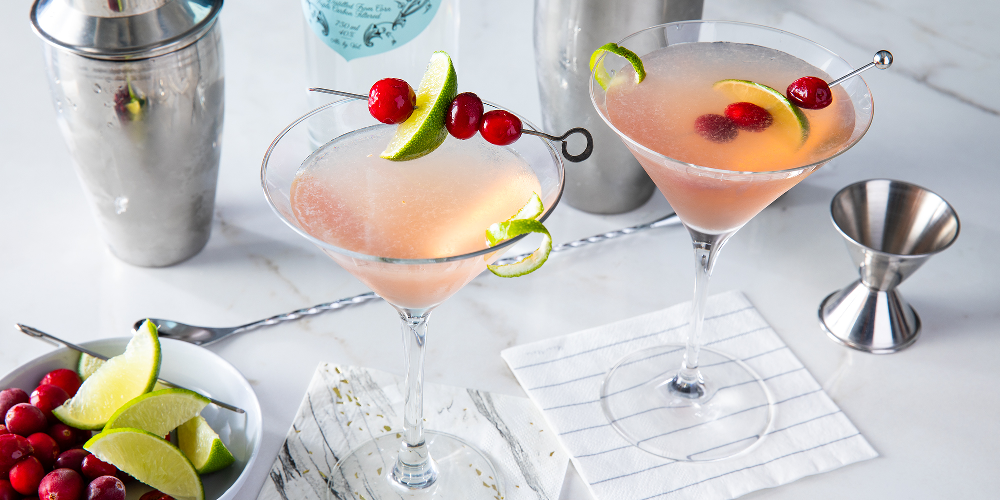

Mojito

Description
Easy recipe for homemade Cosmopolitan Cocktail
- Prep: 5 mins
- Total: 5 mins
- Servings: 1
- Yield: 1 cocktail
Ingridients
- 1 ½ fluid ounces vodka
- ¼ fluid ounce lime juice
- ¼ fluid ounce triple sec
- ¼ fluid ounce cranberry juice
- 1 cup ice
- 1 lime wedge for garnish
Steps
-
Combine vodka, lime juice, triple sec, and cranberry juice in a cocktail shaker.
Add ice, cover and shake until chilled. Strain into a chilled cocktail glass.
-
Garnish with a lime wedge.
Back